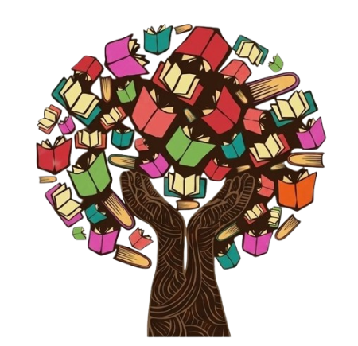
AFETOTECANosso acervo cresce com doações e parcerias — como a arrecadação de livros junto à Livraria CEPE — e fica disponível pra empréstimo gratuito, sem burocracia, pra qualquer pessoa da comunidade.
O maior público ainda são as crianças, que encontram aqui um primeiro contato com os livros e um espaço tranquilo pra descobrir o gosto pela leitura.
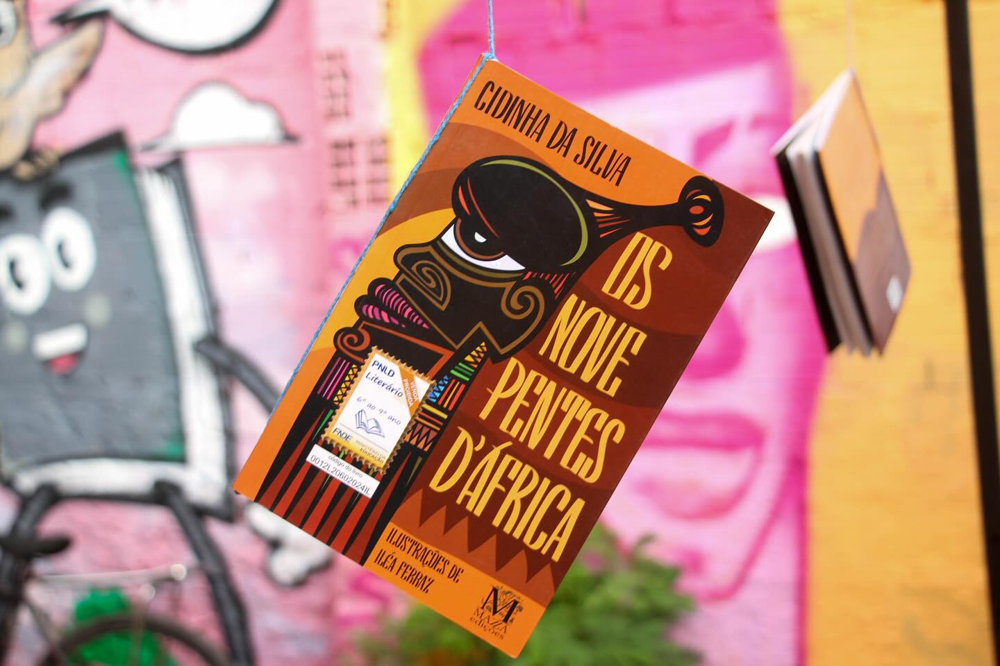
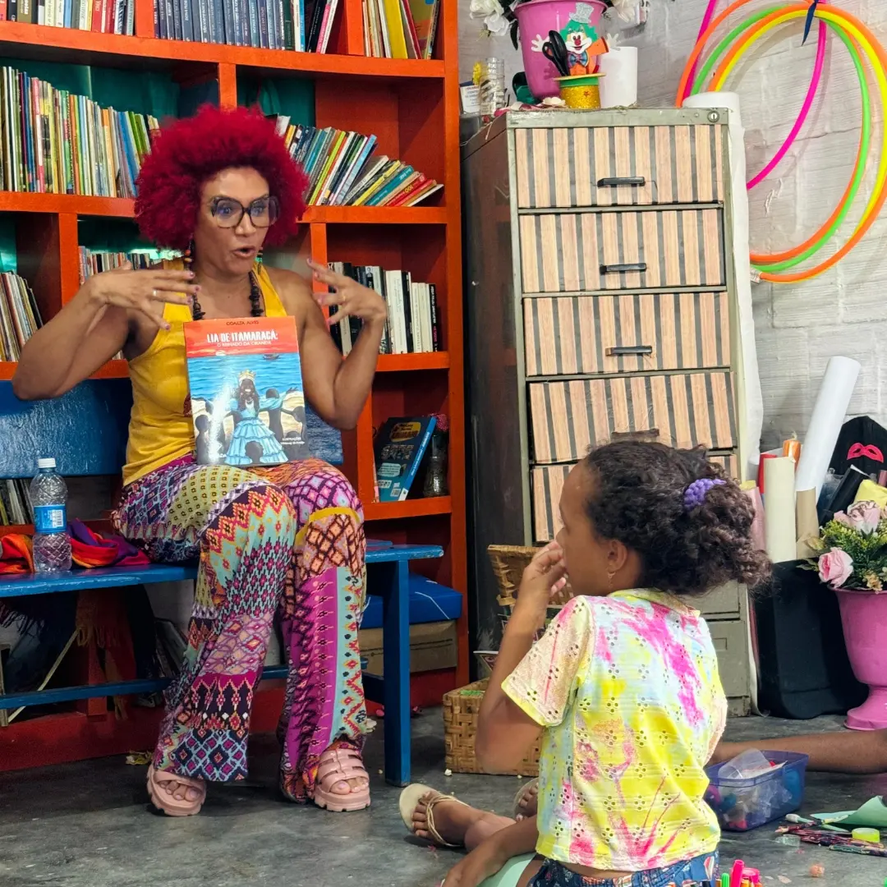
Berimbau, pandeiro, atabaque e a roda formada por adultos e crianças juntos. Mais que atividade física, é o resgate de uma tradição afro-brasileira de corpo, música e resistência.
Cada encontro reúne quem já joga capoeira há anos e quem está pisando na roda pela primeira vez.
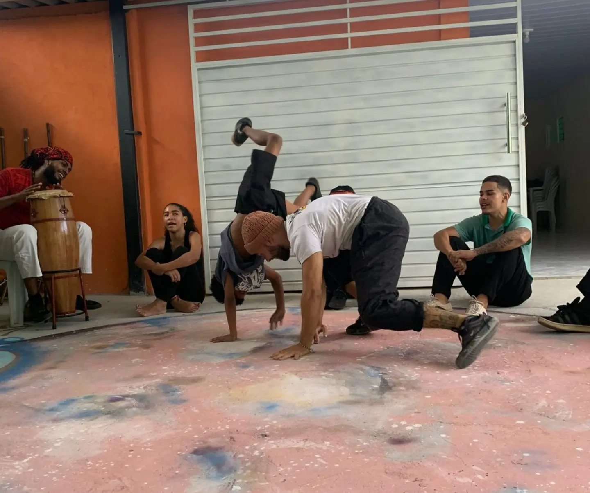
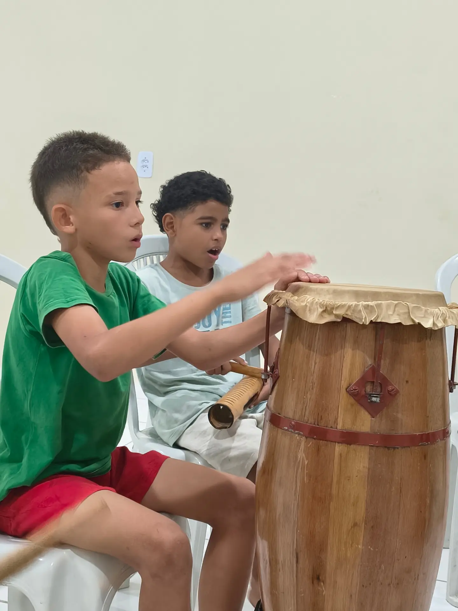
Um espaço onde se aprende ponto a ponto, entre gerações diferentes, e a linha vira desculpa pra fortalecer vínculos.
Pra muitas participantes, o crochê também vira uma fonte extra de renda — o aprendizado sai da roda e continua em casa.
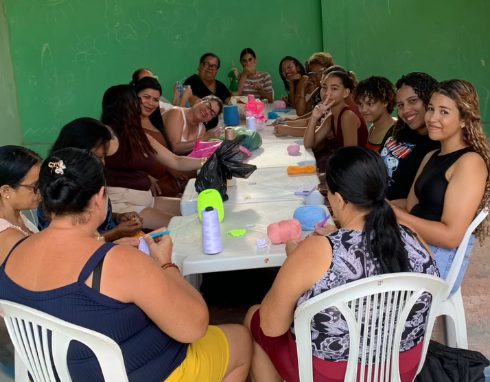
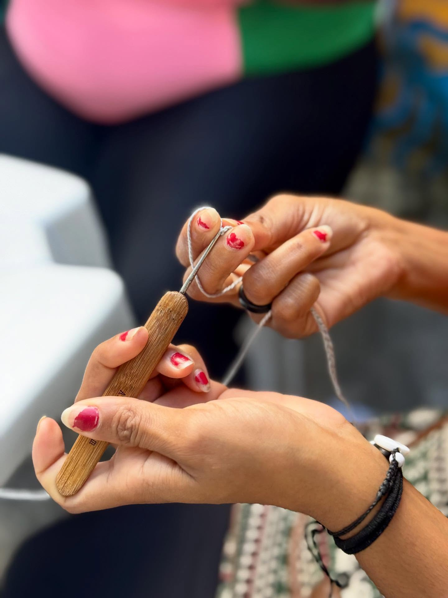
Tambor, pandeiro, agogô — a Afetoteca ganhou um novo ritmo com as aulas de percussão e música, explorando diferentes instrumentos e os sons da cultura popular a cada encontro.
Um convite pra experimentar, errar o compasso e descobrir a música como linguagem coletiva. Aberto pra todas as idades.
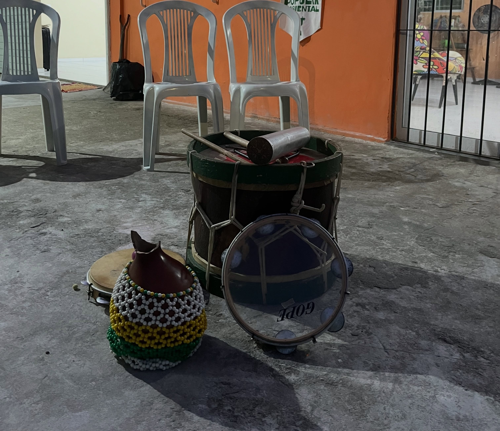
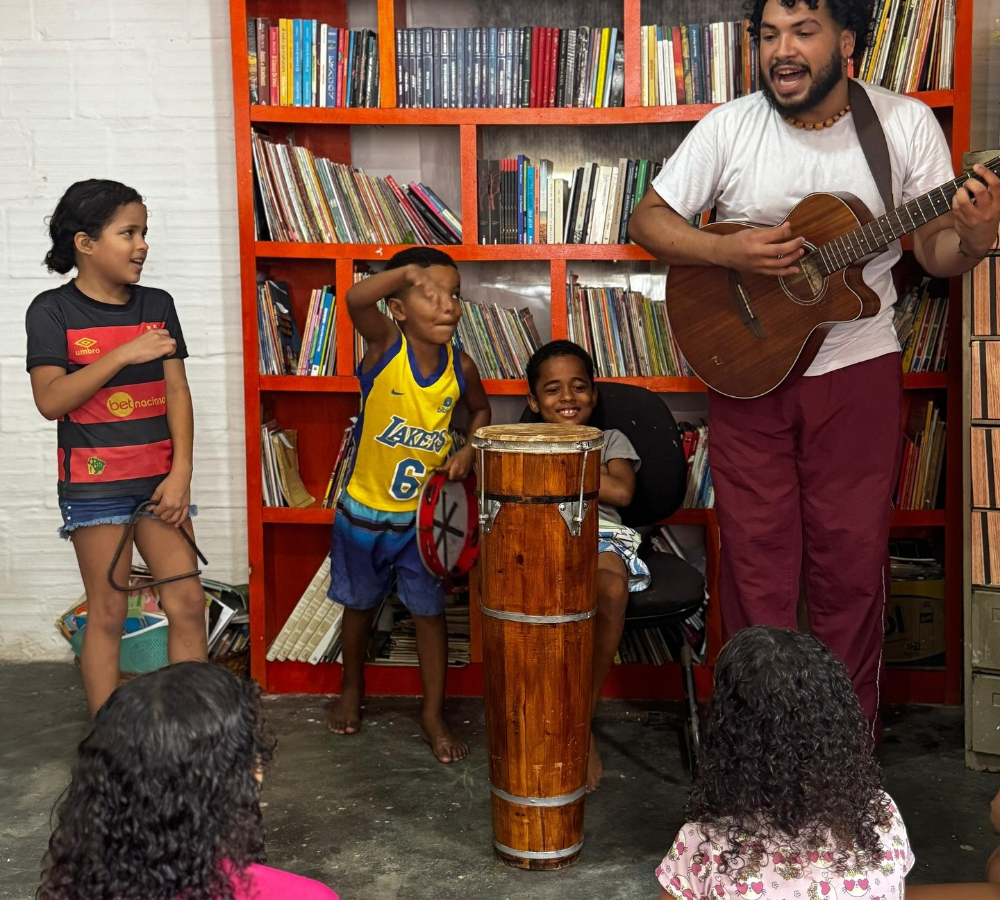
Pintura, desenho e outras formas de expressão visual ganham espaço na Afetoteca com as Atividades Artísticas, em parceria com a Dubomprod.
Um ateliê coletivo aberto a quem quiser experimentar, criar e se expressar — sem compromisso com o resultado, só com o processo.
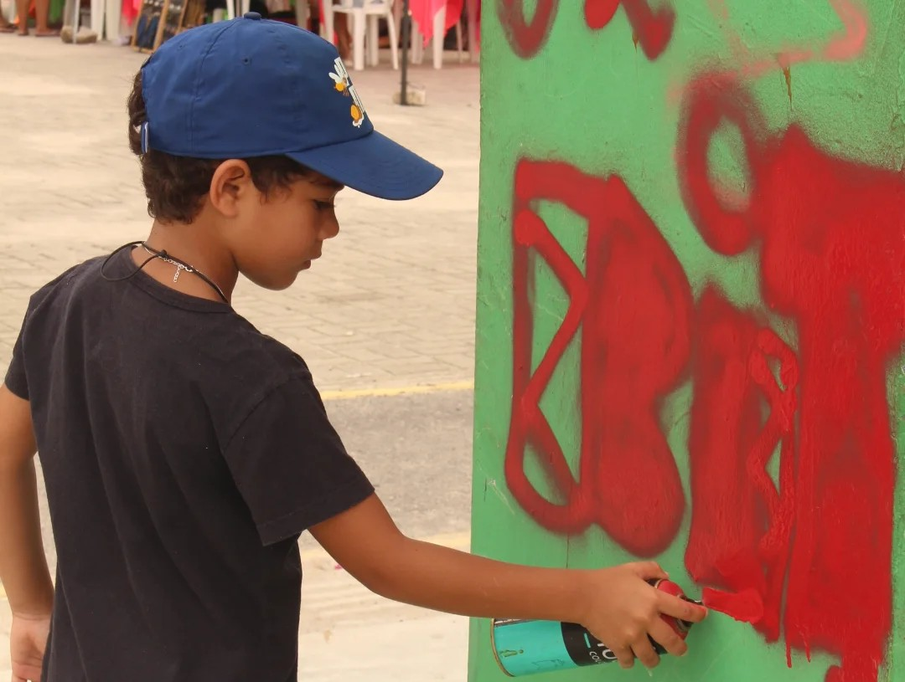
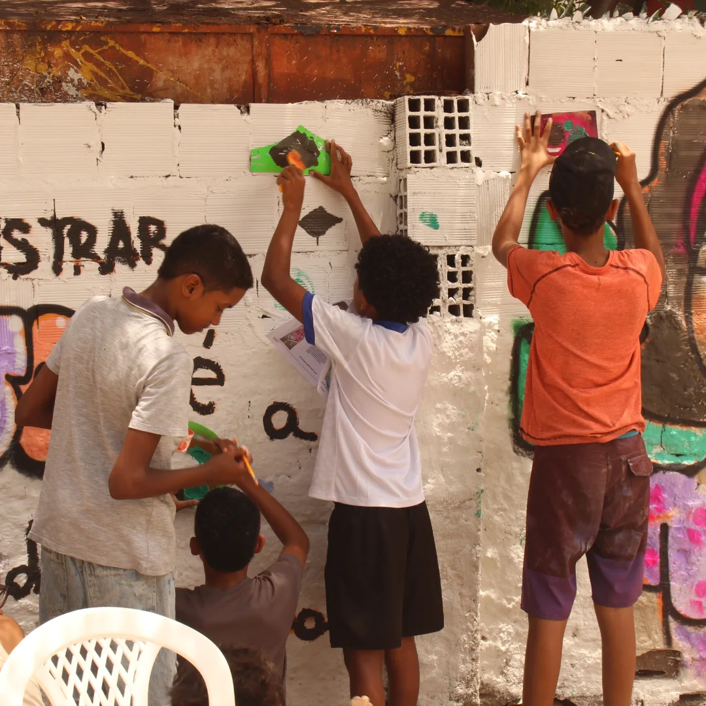
Um comitê de jovens da comunidade de Roda de Fogo que transforma território em ação coletiva: rodas de conversa, slam de poesia, oficinas de escuta crítica e percussão, sempre com a mobilização da comunidade no centro.
Entre capoeira angola, cultura e organização, é a prova de que favela vive — e resiste através da juventude.
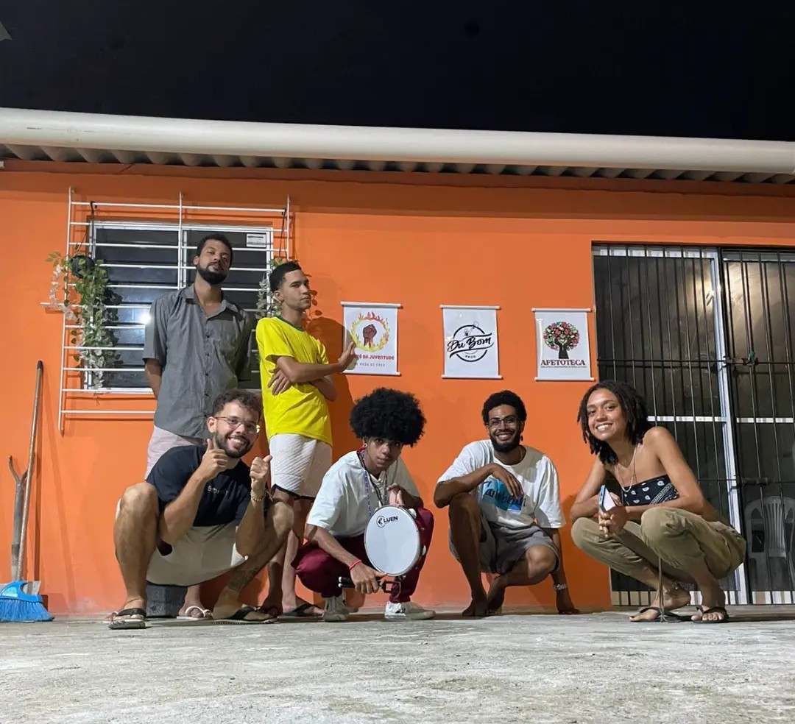
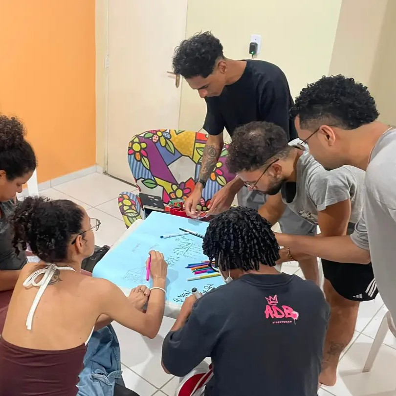
De segunda a sexta, a Afetoteca se enche de encontros, aprendizados e atividades.
19h às 21h
Com os mestres João Feijão e João Arroz.
16h às 18h
Com o professor Caio.
14h30 às 17h
Com Jauhina.
14h às 19h
Com a Dubomprod.
14h às 19h
Com o Comitê da Juventude de Roda de Fogo.
Seja como voluntário(a), doando livros ou simplesmente aparecendo pra conhecer e participar, tem sempre espaço para mais gente.
Quero Ajudar